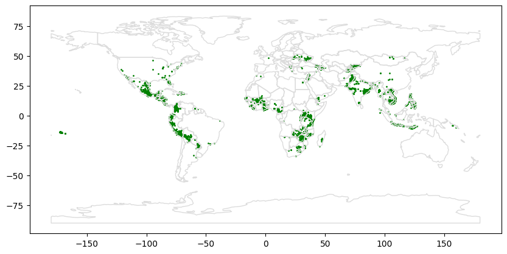

import geopandas as gpd
#from learntools.core import binder
#binder.bind(globals())
#from learntools.geospatial.ex1 import *This notebook is an exercise in the Geospatial Analysis course. You can reference the tutorial at this link.
Introduction
Kiva.org is an online crowdfunding platform extending financial services to poor people around the world. Kiva lenders have provided over $1 billion dollars in loans to over 2 million people.

Kiva reaches some of the most remote places in the world through their global network of “Field Partners”. These partners are local organizations working in communities to vet borrowers, provide services, and administer loans.
In this exercise, you’ll investigate Kiva loans in the Philippines. Can you identify regions that might be outside of Kiva’s current network, in order to identify opportunities for recruiting new Field Partners?
To get started, run the code cell below to set up our feedback system.
1) Get the data.
Use the next cell to load the shapefile located at loans_filepath to create a GeoDataFrame world_loans.
loans_filepath = "C:/Users/ENGLISH/Downloads/archive/kiva_loans/kiva_loans/kiva_loans.shp"
# Your code here: Load the data
world_loans = gpd.read_file(loans_filepath)
world_loans.head()
# Check your answer
#q_1.check()
# Uncomment to view the first five rows of the data
#world_loans.head()| Partner ID | Field Part | sector | Loan Theme | country | amount | geometry | |
|---|---|---|---|---|---|---|---|
| 0 | 9 | KREDIT Microfinance Institution | General Financial Inclusion | Higher Education | Cambodia | 450 | POINT (102.89751 13.66726) |
| 1 | 9 | KREDIT Microfinance Institution | General Financial Inclusion | Vulnerable Populations | Cambodia | 20275 | POINT (102.98962 13.02870) |
| 2 | 9 | KREDIT Microfinance Institution | General Financial Inclusion | Higher Education | Cambodia | 9150 | POINT (102.98962 13.02870) |
| 3 | 9 | KREDIT Microfinance Institution | General Financial Inclusion | Vulnerable Populations | Cambodia | 604950 | POINT (105.31312 12.09829) |
| 4 | 9 | KREDIT Microfinance Institution | General Financial Inclusion | Sanitation | Cambodia | 275 | POINT (105.31312 12.09829) |
# Lines below will give you a hint or solution code
#q_1.hint()
#q_1.solution()2) Plot the data.
Run the next code cell without changes to load a GeoDataFrame world containing country boundaries.
# This dataset is provided in GeoPandas
world_filepath = gpd.datasets.get_path('naturalearth_lowres')
world = gpd.read_file(world_filepath)
world.head()| pop_est | continent | name | iso_a3 | gdp_md_est | geometry | |
|---|---|---|---|---|---|---|
| 0 | 889953.0 | Oceania | Fiji | FJI | 5496 | MULTIPOLYGON (((180.00000 -16.06713, 180.00000... |
| 1 | 58005463.0 | Africa | Tanzania | TZA | 63177 | POLYGON ((33.90371 -0.95000, 34.07262 -1.05982... |
| 2 | 603253.0 | Africa | W. Sahara | ESH | 907 | POLYGON ((-8.66559 27.65643, -8.66512 27.58948... |
| 3 | 37589262.0 | North America | Canada | CAN | 1736425 | MULTIPOLYGON (((-122.84000 49.00000, -122.9742... |
| 4 | 328239523.0 | North America | United States of America | USA | 21433226 | MULTIPOLYGON (((-122.84000 49.00000, -120.0000... |
Use the world and world_loans GeoDataFrames to visualize Kiva loan locations across the world.
# Your code here
ax = world.plot(figsize=(10,10), color='none', edgecolor='gainsboro', zorder=3)
world_loans.plot(color = "green", ax = ax, markersize = 1)
# Uncomment to see a hint
#q_2.hint()<Axes: >
# Get credit for your work after you have created a map
#q_2.check()
# Uncomment to see our solution (your code may look different!)
#q_2.solution()3) Select loans based in the Philippines.
Next, you’ll focus on loans that are based in the Philippines. Use the next code cell to create a GeoDataFrame PHL_loans which contains all rows from world_loans with loans that are based in the Philippines.
# Your code here
PHL_loans = world_loans[world_loans['country'] == "Philippines"]
# Check your answer
#q_3.check()# Lines below will give you a hint or solution code
#q_3.hint()
#q_3.solution()4) Understand loans in the Philippines.
Run the next code cell without changes to load a GeoDataFrame PHL containing boundaries for all islands in the Philippines.
# Load a KML file containing island boundaries
gpd.io.file.fiona.drvsupport.supported_drivers['KML'] = 'rw'
PHL = gpd.read_file("C:/Users/ENGLISH/Downloads/archive/Philippines_AL258.kml", driver='KML')
PHL.head()| Name | Description | geometry | |
|---|---|---|---|
| 0 | Autonomous Region in Muslim Mindanao | MULTIPOLYGON (((119.46690 4.58718, 119.46653 4... | |
| 1 | Bicol Region | MULTIPOLYGON (((124.04577 11.57862, 124.04594 ... | |
| 2 | Cagayan Valley | MULTIPOLYGON (((122.51581 17.04436, 122.51568 ... | |
| 3 | Calabarzon | MULTIPOLYGON (((120.49202 14.05403, 120.49201 ... | |
| 4 | Caraga | MULTIPOLYGON (((126.45401 8.24400, 126.45407 8... |
Use the PHL and PHL_loans GeoDataFrames to visualize loans in the Philippines.
# Your code here
ax = world.plot(figsize=(10,10), color='none', edgecolor='gainsboro', zorder=3)
world_loans.plot(color = "green", ax = ax, markersize = 1)
# Uncomment to see a hint
#q_4.a.hint()<Axes: ># Get credit for your work after you have created a map
#q_4.a.check()
# Uncomment to see our solution (your code may look different!)
#q_4.a.solution()Can you identify any islands where it might be useful to recruit new Field Partners? Do any islands currently look outside of Kiva’s reach?
You might find this map useful to answer the question.
# View the solution (Run this code cell to receive credit!)
#q_4.b.solution()Keep going
Continue to learn about coordinate reference systems.
Have questions or comments? Visit the course discussion forum to chat with other learners.